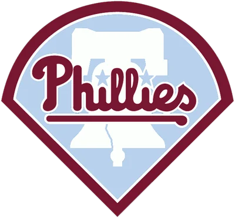

Historical player · 3B
Pinky May
- Position
- 3B
- Bats/Throws
- R/R
- Height/Weight
- 6'0", 165 lb
- Born
- Jan 18, 1911 in Laconia, NH
- Major-league seasons
- 1939–1943 (5)
- Main franchise
 Philadelphia Phillies
Philadelphia Phillies- Status
- Retired
| Year | Team | Lg | G | PA | AB | R | H | 2B | 3B | HR | RBI | SB | CS | BB | K | AVG | OBP | SLG | OPS | WAR |
|---|---|---|---|---|---|---|---|---|---|---|---|---|---|---|---|---|---|---|---|---|
| 1939 | Philadelphia Phillies | NL | 135 | 534 | 464 | 49 | 133 | 27 | 3 | 2 | 62 | 4 | 8 | 41 | 20 | .287 | .344 | .371 | .715 | 0.6 |
| 1940 | Philadelphia Phillies | NL | 136 | 575 | 501 | 59 | 147 | 24 | 2 | 1 | 48 | 2 | 6 | 58 | 33 | .293 | .369 | .355 | .724 | 2.0 |
| 1941 | Philadelphia Phillies | NL | 142 | 558 | 490 | 46 | 131 | 17 | 4 | 0 | 39 | 2 | 4 | 55 | 30 | .267 | .342 | .318 | .660 | 1.1 |
| 1942 | Philadelphia Phillies | NL | 115 | 410 | 345 | 25 | 82 | 15 | 0 | 0 | 18 | 3 | 4 | 51 | 17 | .238 | .336 | .281 | .617 | 0.6 |
| 1943 | Philadelphia Blue Jays | NL | 137 | 483 | 415 | 31 | 117 | 19 | 2 | 1 | 48 | 2 | 1 | 56 | 21 | .282 | .367 | .345 | .712 | 2.3 |
| Career | 5 seasons | 665 | 2560 | 2215 | 210 | 610 | 102 | 11 | 4 | 215 | 13 | 23 | 261 | 121 | .275 | .352 | .337 | .689 | 6.6 |
| Year | Team | Pos | G | GS | Inn | TC | PO | A | E | DP | Fld% |
|---|---|---|---|---|---|---|---|---|---|---|---|
| 1939 | Philadelphia Phillies | 3B | 132 | 132 | 1127.0 | 435 | 153 | 263 | 19 | 28 | .956 |
| 1940 | Philadelphia Phillies | 3B | 135 | 133 | 1184.0 | 457 | 139 | 297 | 21 | 12 | .954 |
| 1940 | Philadelphia Phillies | SS | 1 | 0 | 9.0 | 8 | 1 | 6 | 1 | 1 | .875 |
| 1941 | Philadelphia Phillies | 3B | 140 | 140 | 1189.0 | 533 | 194 | 324 | 15 | 31 | .972 |
| 1942 | Philadelphia Phillies | 3B | 107 | 107 | 849.0 | 349 | 109 | 227 | 13 | 23 | .963 |
| 1943 | Philadelphia Blue Jays | 3B | 132 | 132 | 1068.0 | 438 | 142 | 280 | 16 | 20 | .963 |
| Career | 3B | 646 | 644 | 5417.0 | 2212 | 737 | 1391 | 84 | 114 | .962 | |
| Career | SS | 1 | 0 | 9.0 | 8 | 1 | 6 | 1 | 1 | .875 |
All-Star selections 1
League-leader finishes top 10; 0 times first
| Year | League | Category | Place | Value |
|---|---|---|---|---|
| 1940 | NL | On-base % | 8th | .369 |
Seasons before 2002 are real MLB history from the OOTP export, mapped by OOTP onto this league's 30 original franchises (club names are as they were in that season). 2002 is this universe. Player names are as the export stores them (apart from a few Alexander has renamed in his game since this dump, such as Babe Ruth): OOTP gives some historical players generated names (the 586-homer career is filed under “Legendre Robinson”), and the site keeps them. Every player links to a page: 2002 players to their season pages, everyone else to a historical career page.